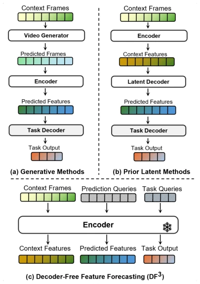
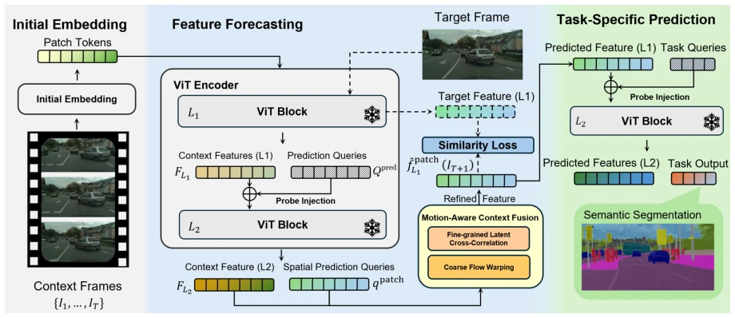
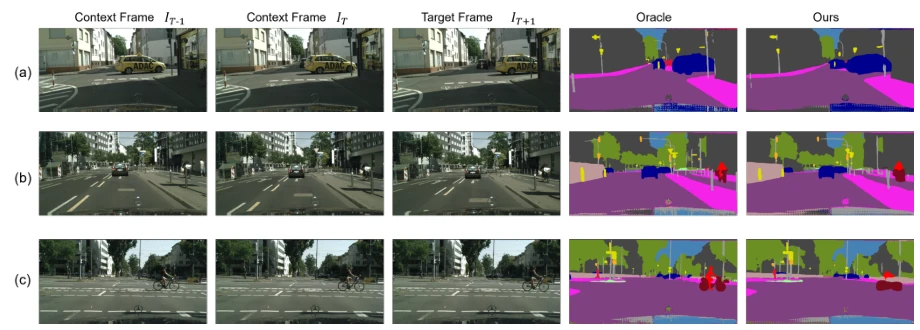
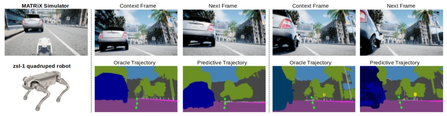

DF$^3$: World Modeling via Decoder-Free Feature Forecasting in Autonomous Navigation
Jiaming Chen, Guoan Xu, Aoshen Huang, Haozhuo Zhang, Yang Li, Wei Pan abspdf
论文点评Review
这篇论文给世界模型来了个“断舍离”，试图把像素级生成的冗余和传统潜变量解码器的累赘全砍了。DF$^3$ 的核心骚操作是在冻结的 ViT 编码器里直接搞事情，用可学习查询（queries）硬刚未来特征预测。虽然听起来像是“既要马儿跑又要马儿不吃草”，但在 Cityscapes 上确实跑出了接近 SOTA 的精度，同时把推理延迟砍了 70%，显存省了 67%。不过，这种“裸奔”在特征空间的操作，注定牺牲了像素级的细腻度，边缘模糊在所难免。对于需要实时决策的机器人来说，这招“抓大放小”很实用，但要是想拿去做高保真视频生成，那还是趁早打消念头。总的来说，这是一次在效率与精度之间走钢丝的漂亮尝试，虽然钢丝有点细，但对于边缘计算设备来说，这碗饭端得稳。
This paper performs a "decluttering" on world models, attempting to cut out the redundancy of pixel-level generation and the burden of traditional latent variable decoders. The core maneuver of DF$^3$ is to directly operate within a frozen ViT encoder, using learnable queries to directly tackle future feature prediction. Although it sounds like "wanting the horse to run without feeding it grass", it indeed achieved near-SOTA accuracy on Cityscapes, while cutting inference latency by 70% and saving 67% of memory. However, this "unprotected" operation in feature space inevitably sacrifices pixel-level delicacy, and blurry edges are unavoidable. For robots requiring real-time decision-making, this strategy of "focusing on the big and letting go of the small" is very practical, but if one intends to use it for high-fidelity video generation, it is best to give up the idea early. Overall, this is a skillful attempt at walking a tightrope between efficiency and accuracy; although the tightrope is somewhat thin, for edge computing devices, this task is handled steadily.
The core pain point of autonomous driving and embodied intelligence lies in how to predict the future at low cost. Existing generative methods [4]-[6], while capable of rendering realistic future videos, incur massive computational overhead and generate a large amount of texture details useless for decision-making. Latent variable methods [12], [13], although shifting to feature space, still rely on heavy decoders to map features back to task outputs, becoming a stumbling block for real-time deployment. The authors keenly point out that for decision-making tasks such as navigation, semantic-level dynamic capture is more important than pixel-level reconstruction. Therefore, whether prediction can be completed entirely within the encoder space of a pre-trained Vision Foundation Model (VFM), without relying on external decoders, becomes the key question. This not only eliminates computational bottlenecks but also allows the model to focus more on task-relevant dynamic information rather than irrelevant visual noise.

Fig. 1. Conceptual comparison of forecasting paradigms. (a) Generative methods perform heavy computation in pixel space, generating redundant visual details. (b) Prior latent methods predict semantic features but rely on massive feature and task decoders. (c) Our DF3 framework operates entirely within a frozen vision encoder. By employing query injection and a lightweight motion-aware context fusion module, it forecasts future states and derives task outputs in a fully decoder-free manner.
方法Method
DF$^3$ 的整体架构基于冻结的 DINOv3 ViT 编码器。首先，历史帧通过编码器提取特征，但保留中间层输出以保留空间结构。核心创新在于引入两组可学习查询：预测查询（Prediction Queries）和任务查询（Task Queries）。预测查询被注入到 ViT 的终端块中，与历史上下文交互以生成未来帧的特征表示。为了解决冻结编码器无法捕捉时序动态的问题，作者设计了运动感知上下文融合（MACF）机制。该机制并行处理两条分支：一是基于光流的粗粒度扭曲（Flow-based Warp），用于宏观位移；二是基于潜在特征互相关的细粒度对齐（Latent Cross-Correlation），用于捕捉局部运动。两者通过门控机制动态融合，修正预测查询。最后，任务查询被注入到同一编码器中，基于预测出的特征直接提取任务输出（如语义分割），全程无需解码器。这种设计确保了从特征预测到任务决策的端到端轻量化，且训练仅依赖特征级监督，无需下游任务联合训练。
The overall architecture of DF$^3$ is based on a frozen DINOv3 ViT encoder. First, features are extracted from historical frames through the encoder, but intermediate layer outputs are retained to preserve spatial structure. The core innovation lies in introducing two sets of learnable queries: Prediction Queries and Task Queries. Prediction queries are injected into the terminal blocks of ViT, interacting with historical context to generate feature representations of future frames. To address the problem that frozen encoders cannot capture temporal dynamics, the authors designed a Motion-Aware Context Fusion (MACF) mechanism. This mechanism processes two branches in parallel: one is Flow-based Warp based on optical flow, used for macroscopic displacement; the other is Latent Cross-Correlation based on latent feature cross-correlation, used to capture local motion. The two are dynamically fused through a gating mechanism to correct the prediction queries. Finally, task queries are injected into the same encoder to directly extract task outputs (such as semantic segmentation) based on the predicted features, without requiring a decoder throughout the process. This design ensures end-to-end lightweighting from feature prediction to task decision-making, and training relies only on feature-level supervision, without requiring joint training of downstream tasks.

Fig. 2. The overall pipeline of the proposed DF3 framework.
Experiments were conducted on the Cityscapes dataset for short-term and medium-term prediction evaluation, and zero-shot deployed on the MATRiX quadruped robot simulator. Comparison baselines include DINO-Foresight [13] and Oracle upper bound. Results show that DF$^3$ achieved 69.9 mIoU and 68.7 MO-mIoU on short-term prediction, slightly lower than DINO-Foresight's 71.8, but inference latency was reduced by 70% (292ms vs 971ms), and peak memory usage decreased by 67%. Ablation studies indicate that the combination of optical flow and cross-correlation in MACF yields the best results, and a search radius of r=8 better captures fast motion. In robot simulation, despite domain differences, features predicted by DF$^3$ can still support ViPlanner in generating reasonable navigation trajectories, proving its generalization capability across embodied devices. The main limitations lie in edge blurring caused by feature space prediction, and currently it does not support action-conditioned prediction.

Fig. 3. The visualization results of DF3 on Cityscapes.

Fig. 4. Qualitative deployment results in the MATRiX simulator. The left column illustrates the simulation environment and the zsl-1 quadruped robot. We integrate the forecasted features of DF3 with ViPlanner to perform trajectory prediction. The green points visualize the predicted trajectory waypoints. This integration enables the quadruped robot to accurately anticipate environmental dynamics and plan safe navigation paths.